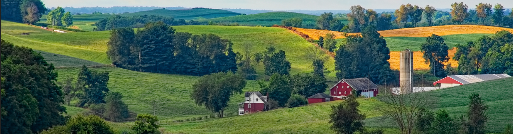
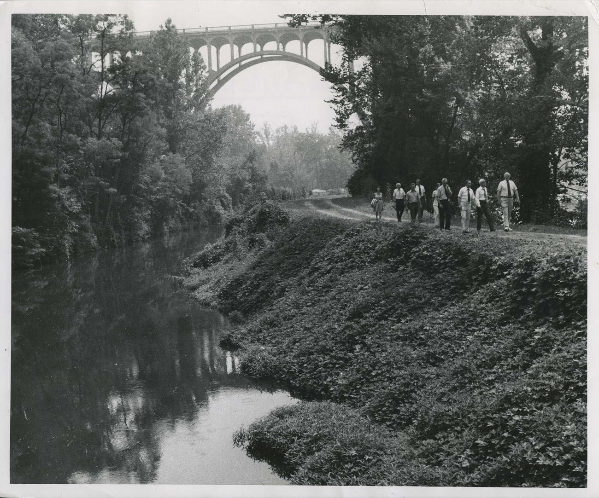
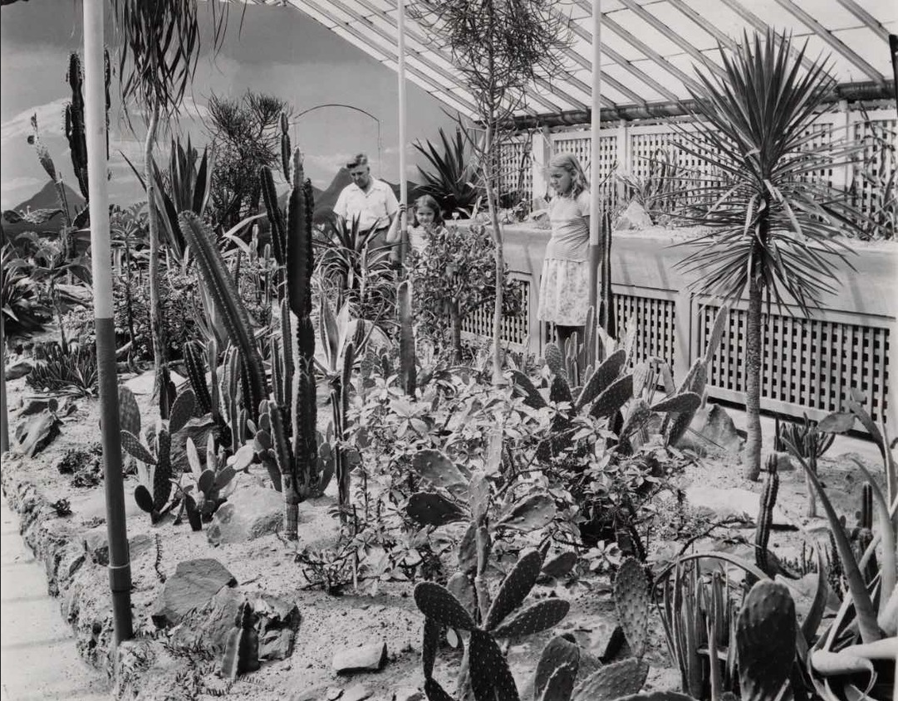

A Working Landscape
Long before the park was established, the Cuyahoga Valley’s agricultural economy depended on the connective tissue of canals and railroads. The Ohio & Erie Canal, completed in 1832, dramatically lowered shipping costs and allowed farm goods to move to urban markets. As rail lines expanded in the late 1800s, the valley shifted again, linking rural producers to broader trade networks while reshaping settlement patterns and farm life.

As transportation improved, Northeast Ohio became known for its nurseries and greenhouse production. The region’s growers experimented with glasshouse cultivation and specialty crops, creating a distinct agricultural identity that blended innovation with small‑farm resilience. These “glass gardens” added a new layer to the valley’s farming story, shifting the landscape from purely field crops to a more diversified horticultural economy.

The Countryside Initiative, launched in 1999, reframed these historic farms as living, working places once again. By leasing rehabilitated farmsteads under long‑term agreements, the program invited new farmers to steward the land, prioritize sustainable practices, and reconnect the public to an agricultural landscape inside a national park. The result is a living laboratory where rural heritage, ecological care, and modern farm economies can coexist.

The program is grounded in a partnership model: a nonprofit partner was created alongside the initiative in 1999 (known as Countryside Conservancy and later Countryside Food and Farms). That organization’s mission is framed as connecting people, food, and land through programs, advocacy, and education. Long‑term lease terms (described in case studies as 60‑year leases) enable farmers to invest in stewardship while the park maintains agricultural use.
Program histories identify Darwin Kelsey as the founder of the nonprofit partner and note leadership transitions after his death in 2016, with operational continuity maintained through subsequent directors.
Public‑facing farmers markets became a key interface between park farms and the region: the first market began in Peninsula in 2004, moved to Howe Meadow in 2009, and expanded winter offerings in 2010. Recent program records note that the market became its own nonprofit organization in 2022 and later shifted toward weekly operation. Training pipelines and education programs have been emphasized as strategic next steps for the initiative’s future.